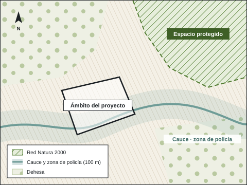

Estudios de impacto ambiental.
La documentación ambiental que pide el trámite, con la cartografía de cada afección sobre el terreno. Para promotores, explotaciones y ayuntamientos.

Evaluación de impacto ambiental.
Consulta previa
Saber antes de invertir si el proyecto necesita evaluación y de qué tipo.
Documento ambiental
Para la evaluación simplificada: el proyecto, sus alternativas, sus efectos y las medidas para corregirlos.
Estudio de impacto ambiental
Para la evaluación ordinaria: inventario ambiental, valoración de impactos y programa de vigilancia.
Vigilancia ambiental
Seguimiento de las medidas durante la ejecución y después, con informes periódicos.
El trámite en Extremadura.
La Ley 16/2015 de protección ambiental de Extremadura fija qué proyectos necesitan evaluación ordinaria y cuáles simplificada.
- En la simplificada, el promotor presenta la solicitud con el documento ambiental, y el órgano ambiental tiene tres meses para emitir su informe.
- Si el informe concluye que hay efectos significativos, el proyecto pasa a evaluación ordinaria, con estudio de impacto ambiental.
- Le acompañamos en las consultas y en los requerimientos hasta la resolución.
Cartografía ambiental.
Un estudio ambiental se apoya en planos. Los hacemos con la misma precisión que la cartografía catastral.
- Afecciones: espacios de la Red Natura 2000, áreas protegidas, cauces y su zona de policía.
- Vegetación y usos del suelo sobre ortofoto, con su superficie medida.
- Ámbito de estudio y alternativas, comparadas sobre el mismo plano.
- Planos a escala para el expediente, y capas para el SIG del órgano ambiental.
Seguimiento desde el aire.
Volamos la zona con nuestro dron al empezar y en cada visita de seguimiento. Las ortofotos de cada fecha, superpuestas, muestran y miden lo que ha cambiado.
Lo que nos preguntan.
¿Mi proyecto necesita evaluación ambiental?
Depende del tipo de proyecto, de su tamaño y de dónde esté. Con la descripción y la ubicación le decimos qué procedimiento le corresponde.
¿Cuánto tarda?
La redacción depende del proyecto. En la evaluación simplificada, el órgano ambiental tiene tres meses desde que recibe la solicitud.
¿Qué necesitan para empezar?
La descripción del proyecto, su ubicación y, si existen, los planos. Del resto nos ocupamos nosotros.
¿Tiene un proyecto en marcha?
Cuéntenos qué es y dónde está. Le decimos qué procedimiento le toca y qué documentación hace falta.
- emiliocontadorbrito@gmail.com
- Calle Matilde Tagle Ortiz, 28, 5.º D, 06006 Badajoz